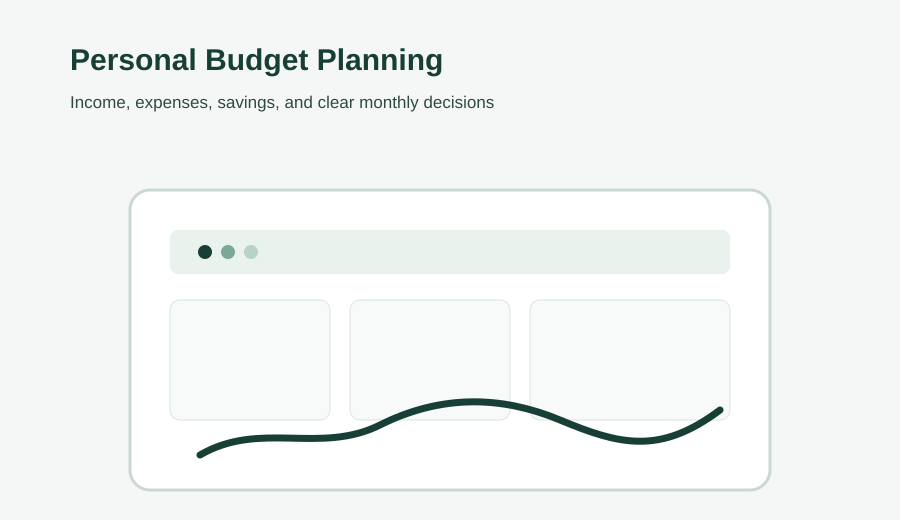

How to Create a Personal Budget That Actually Works
A practical guide to turning income and expenses into a simple, workable personal budget.
Read ArticleDetail-oriented content professional creating clear, useful, research-driven content designed for both readers and search engines. My supporting background in data analysis and web technology helps me approach digital content with structure and evidence.
Readable, structured articles that consider search intent, topic relevance and the needs of real readers.
Clear website copy and content updates organized for usability, consistency and discoverability.
On-page improvements such as titles, headings, internal links, keyword placement and content structure.
Careful topic research, source comparison and organized information gathering before writing.
Data cleaning, validation, analysis and visualization as a supporting capability for evidence-informed work.
Content updates, publishing, maintenance and SEO-aware website support.
Since January 2020, I have worked in SEO and content writing and operated monetized blogs that generate consistent income through organic SEO traffic. My work covers keyword research, on-page SEO, internal linking, content publishing, Pinterest marketing, performance analysis, and technical SEO.
Grow blog traffic through keyword research, on-page SEO optimization and strategic internal linking, with content focused on Google and Bing Page 1 visibility.
Monetize blog properties through display advertising and affiliate partnerships, generating regular income without paid ads.
Use Google Analytics and Search Console to track CTR, bounce rate and conversion metrics while managing technical SEO, site speed, mobile optimization and crawlability.

A practical guide to turning income and expenses into a simple, workable personal budget.
Read Article
A practical look at how AI is reshaping tasks, workflows, collaboration and the skills people need.
Read ArticleAn accessible explanation of SEO, search intent, content quality and sustainable organic visibility.
Read Article